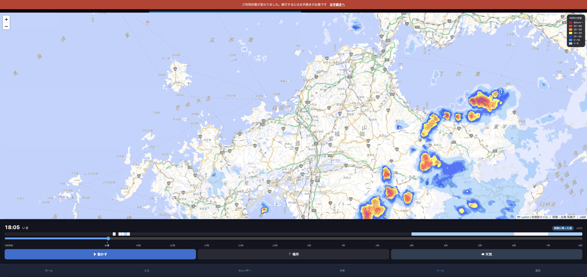

バーの色で
いつ降るか
が分かります
いま見ている場所の雨だけを、時間順に並べました。
こう見えます
18:05
いま
3時間前
いま
22時
2時
8時
ぱらつく
朝方に強まる
色が濃いほど強い雨。色が無いところは降りません
色の意味は、地図の右上の凡例と同じです。
薄い水色＝弱い雨、青＝しっかり、黄・赤＝強い雨。
実際の画面（福岡）

地図は雨だらけでも、「自分のいる場所」がいつ降るかはバーを見れば分かります
どうやって出しているか
地図の真ん中の1点
→
その1点の色を、62コマぶん読む
の8段階
時間の順に並べて帯にする
地図に出ている雨の絵から、その場所の色をそのまま拾っています
場所を変えると、すぐ調べ直します。
「📍 場所」で選んでも、地図を指で動かしても追いかけます。
まとめ
時刻バーの上に、
その場所の雨
が色で並びます。
色が無い時間は降りません。全部無ければ「この先ずっと雨なし」と出ます。
場所を変えると追いかけます。
本番に出しました（v400）。
テスト1222件すべて通っています。